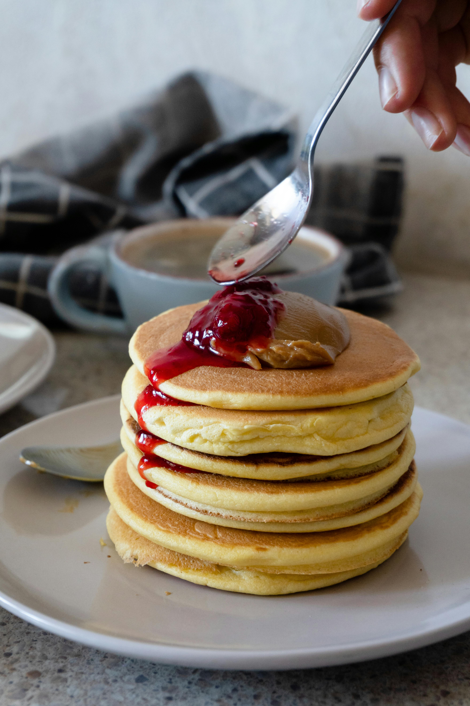

Delicious Pancakes

Description
This pancake recipe is very delicious and eay to make and doesn't require much thought early in the morning and the pancakes taste great!
Ingredients
- 1 cup all-purpose flour
- 2 tablespoons white sugar
- 2 teaspoons baking powder
- 1 teaspoon salt, or to taste
- 1 cup milk
- 2 tablespoons vegetable oil
- 1 egg, beaten
steps
- Combine flour, sugar, baking powder, and salt in a large bowl. Make a well in the center, and pour in milk, oil, and egg. Mix until smooth.
- Heat a lightly oiled griddle or frying pan over medium-high heat. Pour or scoop batter onto the griddle, using approximately 1/4 cup for each pancake; cook until bubbles form and the edges are dry, 1 to 2 minutes. Flip and cook until browned on the other side. Repeat with remaining batter.
- Serve hot and enjoy!